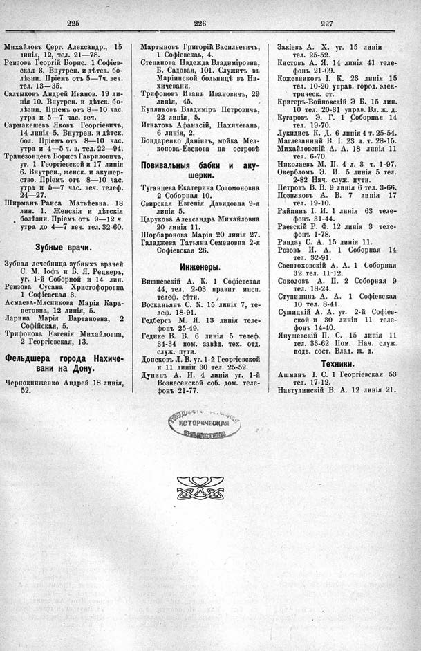

Лист источника 581
Скан

Распознанный текст
225
Михайловъ Серг. Александр., 15
линія, 12, тел. 21—78.
Реизовъ Георгій Борис. 1 Софіев-
ская 3. Внутрен. и дѣтск. бо-
лѣзни. Пріемъ отъ 5—7ч. веч.
тел. 13—35.
Салтыковъ Андрей Иванов. 19 ли-
нія 10. Внутрен. и дѣтск. бо-
лѣзни. Пріемъ отъ 8--10 час.
утра и 5—7 час. веч.
Сармакешевъ Яковъ Георгіевичъ,
14 линія 5. Внутрен. и дѣтск.
бол. Пріемъ отъ 8—10 час.
утра и 4—5 ч. в. тел. 22—94.
Трапезонцевъ Борисъ Гавриловичъ,
уг. 1 Георгіевской и 17 линія
6. Внутрен., женск. и акушер-
ство. Пріемъ отъ 8—10 час.
утра и 5—7 час. веч. телеф.
24—27.
Ширманъ Раиса Матвѣевна. 18
лин. 1. Женскія и дѣтскія
болѣзни. Пріемъ отъ 9—12 ч.
утра до 4—7 веч. тел. 32-60.
Зубные врачи.
Зубная лечебница зубныхъ врачей
С. М. Іофъ и Б. Я. Рецкеръ,
уг. 1-й Соборной и 14 лин.
Реизова Сусана Христофоровна
1 Софіевская 3.
Асмаева-Мясникова Марія Кара-
петовна, 12 линія, 5.
Ларина Марія Вартановна, 2
Софійская, 5.
Трифонова Евгенія Михайловна,
2 Георгіевская, 13.
Фельдшера города Нахиче-
вани на Дону.
Чернокниженко Андрей 18 линія,
52.
226
Мартыновъ Григорій Васильевичъ,
1 Софіевская, 4.
Степанова Надежда Владиміровна,
Б. Садовая, 101. Служитъ въ
Маріинской больницѣ въ На-
хичевани.
Трифоновъ Иванъ Ивановичъ, 29
линія, 45.
Купянковъ Владиміръ Петровичъ,
22 линія, 5.
Игнатовъ Афанасій, Нахичевань,
6 линія, 2.
Бондаренко Даніилъ, мойка Мел-
конова-Езекова на островѣ
Повивальныя бабки и аку-
шерки.
Туганцева Екатерина Соломоновна
2 Соборная 10.
Свирская Евгенія Давидовна 9-я
линія 5.
Царукова Александра Михайловна
20 линія 11.
Шорбаронова Марія 20 линія 27.
Галаджева Татьяна Семеновна 2-я
Софіевская 26.
Инженеры.
Вишневскій А. К. 1 Софіевская
44, тел. 2-03 правит. инсп.
телеф. сѣти.
Восканьянъ С. К. 15 линія 7, те-
леф. 18-91.
Гедбергъ М. Я. 13 линія теле-
фонъ 25-49.
Гедике В. В. 6 линія 5 телеф.
34-34 пом. завѣд. тех. отд.
служ. пути.
Донсковъ Л. В. уг. 1-й Георгіевской
и 11 линіи 30 тел. 25-52.
Дунинъ А. И. 4 линія уг. 1-й
Вознесенской соб. дом. теле-
фонъ 21-77.
227
Закіевъ А. Х. уг. 15 линіи
тел. 25-52.
Кистовъ А. Я. 14 линія 41 теле-
фонъ 21-09.
Кожевниковъ І. К. 23 линія 15
тел. 10-20 управ. город. элек-
трическ. ст.
Кригеръ-Войновскій Э Б. 15 лин.
10 тел. 20-31 управ. Вл. ж. д.
Кугаровъ Э. Г. 1 Соборная 14
тел. 19-70.
Лукидисъ К. Д. 6 линія 4 т. 25-54.
Маглеванный Р. І. 23 л. т. 28-15.
Михайловскій А. А. 18 линія 11
тел. 6-70.
Николаевъ М. П. 4 л. 3 т. 1-97.
Окербломъ Э. И. 5 линія 5 тел.
2-82 Нач. служ. пути.
Петровъ В. В. 9 линія 6 тел. 3-66.
Позняковъ А. В. 7 линія 17
тел. 19-10.
Райцинъ І. И. 1 линія 63 теле-
фонъ 31-44.
Раевскій Р. Ф. 12 линія 3 теле-
фонъ 1-78.
Рандау С. А. 15 линія 11.
Розовъ И. А. 1 Соборная 14
тел. 32-91.
Свентоховскій А. А. 1 Соборная
32 тел. 11-12.
Соколовъ А. П. 2 Соборная 9
тел. 18-24.
Ступишинъ А. А. 1 Софіевская
10 тел. 8-41.
Сушицкій А. А. уг. 2-й Софіев-
ской и 30 линіи 11 теле-
фонъ 14-40.
Янушевскій П. С. 15 линія 11
тел. 33-62 Пом. Нач. служ.
подв. сост. Влад. ж. д.
Техники.
Ашманъ І. С. 1 Георгіевская 53
тел. 17-12.
Навтулинскій В. А. 12 линія 21.